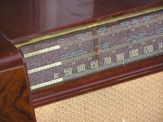

Mussolini aveva capito che il controllo capillare di stampa, radio e cinema era "l'arma più forte" per facilitare la trasmutazione fascista della società italiana. Era essenziale quindi che, accanto alle organizzazioni di partito, il fascismo dominasse anche i mezzi di comunicazione di massa, indispensabili per diffondere modelli di vita e ideologia, creare e rafforzare il consenso.
L'uomo nuovo proposto e immaginato dai pensatori fascisti era un modello anti-borghese: giovane o comunque giovanile, vigoroso e forte, rude e pragmatico, strafottente ma anche sempre e comunque disciplinato. Legato alla tradizione e contemporaneamente proiettato nell'epoca delle macchine. Un misto tra un legionario e colono romano e un aviatore futurista.
Il fascismo esaltava una concezione gerarchica e priramidale del mondo che prevedeva obbedienza cieca e totale al capo. Il regime fascista si autodefiniva come un sistema politico totalitario, poiché si proponeva di controllare totalmente l'esistenza di ogni cittadino italiano, "dalla culla alla tomba". La sua era una filosofia assolutistica che prevedeva l'identificazione dell'individuo con lo Stato e la subordinazione dell'individuo allo Stato in tutti gli aspetti della vita (e così legittimava la repressione di qualsiasi opposizione). La volontà "totalitaria" di costringere ogni cittadino nell'ambito di un organismo collettivo nasce dal desiderio di"integrarlo" e inquadrarlo in formazioni educative, paramilitari, politiche, culturali, sindacali, corporative e assistenziali. Significativa è, a riguardo, l'affermazione che: "La Nazione non è la semplice somma degli individui viventi, né lo strumento dei partiti per i loro fini, ma un organismo comprendente la serie infinita delle generazioni in cui i singoli sono elementi transeunti" ("Programma e statuto del PNF", 1922).
Durante gli anni della Prima Guerra mondiale era nata una piccola rete di radioamatori, ma i Governi guardavano alle trasmissioni radiofoniche con diffidenza e utilizzavano la radiotelegrafia per comunicare in un modo reputato più sicuro. Mussolini si era appena insediato alla Presidenza del Consiglio quando affrontò la questione del ruolo della radio: nel novembre del '22 gli venne consegnato un promemoria segreto di Filippo Bonacci, portavoce di un gruppo privato interessato a promuovere la formazione di una rete radiofonica in Italia. Nel documento si affermava che sia il pubblico, sia il governo fascista avrebbero raggiunto importanti risultati in campo economico e politico grazie a un rapido sviluppo della radiofonia e si affermava "l'Italia è l'unica delle grandi potenze che non abbia ancora un completo e organizzato servizio pubblico radiotelegrafico internazionale a mezzo di un grande ente, che faciliti l'espansione della rete italiana all'estero, dove, per evidenti ragioni politiche, il Regio Governo non può direttamente intervenire con servizi statali". Insieme con l'URI (Unione Radiofonica Italiana), Marconi contribuì ad erigere a Roma una emittente che il 6 ottobre 1924, cominciò a diffondere, con il consenso del regime, i suoi primi programmi sperimentali: questi iniziavano sempre con le note dell'inno fascista "Giovinezza", e consistevano principalmente nella trasmissione di brani musicali. Il regime fece così il suo ingresso nel campo delle comunicazioni radiofoniche e cominciò a scorgere il valore potenziale della radio come veicolo di propaganda. La radio vide la luce nella fase del processo di consolidamento autoritario del nuovo potere, quando la classe dirigente fascista si poneva il problema del controllo dell'opinione pubblica per superare la crisi provocata dal delitto Matteotti. Nel luglio del '24 il regime creò leggi atte a controllare il nascente broadcasting; le restrizioni della libertà di stampa erano destinate a ripercuotersi sulla radio: essa poté servirsi solo per breve tempo di una propria agenzia radiotelegrafica prima che le fosse imposta, nel 1924 la Stefani come unica fonte per i suoi notiziari.
Durante il 1925 dalla radio non uscivano più solo musica e concerti, ma cominciava ad assumere un ruolo importante il parlato: si trattavano argomenti di moda, si parlava di viaggi, si intrattenevano conversazioni su temi letterari; i notiziari erano rari e si limitavano a riproporre informazioni già pubblicate dai giornali.
L'evento radiofonico più importante dell'anno fu l'inaugurazione della stazione di Milano: ben presto si arrivò a un'organizzazione dei programmi più accurata e si raggiunse una maggiore varietà delle trasmissioni tra le quali alcune vennero dedicate ai bambini.
Nel terzo anniversario della marcia venne trasmesso il primo discorso di Mussolini; qualche mese più tardi venne diffuso un discorso di Roberto Farinacci. La stazione lombarda cominciò a parlare di sport e a dare per prima esiti di incontri e risultati, anticipando la stampa (fatto questo del tutto nuovo).
La diffusione regolare dei notiziari si raggiunse verso il 1929 quando venne creato, su insistenza del governo, il giornale Radio, con sei trasmissioni quotidiane. Fu il primo importante tentativo di comunicare agli italiani in modo sistematico notizie d'attualità filtrate e controllate. Grazie a questo espediente il regime riuscì a introdurre la politica direttamente nelle case di tutti gli italiani.
Nel 1930 Lando Ferretti, capo dell'Ufficio Stampa, impartì istruzioni all'Ente Italiano Audizioni Radiofoniche, EIAR, (già URI) affinché predisponesse attrezzature per la radiocronaca diretta di tutte le assemblee pubbliche all'aperto, patrocinate dal governo o dal partito.
E' ovvio che le trasmissioni reputate più importanti erano quelle da piazza Venezia, quando Mussolini parlava alla folla dal balcone del suo studio.
I discorsi del Duce erano trasmessi simultaneamente nelle scuole, nei luoghi di lavoro, nelle piazze di tutto il paese attraverso altoparlanti. La sensazione che avevano le famiglie e la comunità tutta, era quella di assistere, e partecipare personalmente a veri e propri eventi epocali.
Il comitato superiore di controllo sulla radiodiffusione nel 1931 evidenziò due importanti problemi relativi alla radiofonia: il numero di apparecchi posseduto dai contadini e dagli operai era limitato, e si avvertiva la necessità di sviluppare nuove tecniche per poter utilizzare la radio come strumento di cultura. Il comitato voleva che il governo distribuisse apparecchi radio a ciascun gruppo del dopolavoro, a scuole e istituti, e che la radio trasmettesse un maggior volume di programmi culturali, attraverso i quali si sarebbe potuto effettuare un indottrinamento culturale e politico di massa.
Nel corso degli anni '30 le preoccupazioni della politica radiofonica fascista si concentrarono su questi due punti. Sotto la direzione di Costanzo Ciano il Ministero delle Comunicazioni distribuì apparecchi radio alle scuole rurali, con lo scopo di raggiungere non solo gli scolari, ma anche le loro famiglie; si cominciò con mille apparecchi da utilizzare a turno nelle scuole comunali, e poi da offrire in prestito la sera alle organizzazioni degli agricoltori.
L'Ente Radio Rurale nacque nel 1933 con l'incarico di distribuire apparecchi radio nelle scuole elementari delle campagne. I programmi consistevano in brani musicali, discorsi di esponenti dell'EIAR, programmi religiosi e scientifici.
Fattore di ostacolo all'acquisto di un apparecchio rimaneva il prezzo ancora alto, indubbiamente proibitivo per una famiglia operaia media. Una buona radio aveva un costo medio di tremila lire cui andavano aggiunte tassa di licenza e l'abbonamento; questo mentre il reddito medio annuo era di 3498 lire. Nelle zone meridionali e in quelle rurali in genere poi, il pregiudizio, l'analfabetismo, l'isolamento, e il più basso tenore di vita non favorivano certo l'espansione del nuovo mezzo. Il regime verso il '33 pensò allora di produrre una radio popolare, ad un prezzo bassissimo così che potesse entrare anche nelle case più modeste. Il programma della "radio popolare" fu annunciato al pubblico nell'aprile del 1937 con il nome di "radio balilla", ed offriva un apparecchio in modello unico, semplice al prezzo di 430 lire, pagabili in 18 rate mensili.
Alla fine del 1937 il totale degli abbonati all'EIAR ammontava a ottocentomila ed erano in funzione diciotto stazioni trasmittenti.
La storia ci ha così insegnato che i mezzi di comunicazione di massa possono essere usati per ottenere consenso politico; in quegli anni il fascismo si rafforzò come regime totalitario e ogni libertà politica e sindacale venne cancellata.
Per comunicare il cambiamento avvenuto, per testimoniare l'importanza e la novità degli anni che si stavano vivendo, insomma, per completare il quadro propagandistico enfatizzando il proprio ruolo nella Storia, il fascismo aveva persino cambiato il calendario numerando gli anni dall'inizio dell'era fascista (1922) e il fascio littorio era diventato l'emblema dello stato italiano.
Mussolini non usò solo la radio, per diffondere i propri discorsi: egli definì il cinema "l'arma più forte", intuendo quali potenzialità seduttive possedesse questo strumento di comunicazione visiva. Nel 1933 l'Istituto Luce ("L'unione cinematografica educatrice") venne posto alle dipendenze del Ministero della cultura popolare (Minculpop), i cinegiornali, trasmessi prima di ogni spettacolo, magnificavano l'operato del Regime, diffondevano film, documentari e immagini propagandistiche in tutte le sale cinematografiche d'Italia. La parte dichiaratamente dedicata alla politica occupava circa la metà di ogni cinegiornale; il resto, qualsiasi argomento trattasse, possedeva comunque una chiara valenza politica suggerendo i modelli di comportamento da imitare e denigrando altri popoli attraverso una presentazione deformata della realtà di paesi diversi.
La pubblicità era imperniata sull'esaltazione di ogni prodotto in quanto italiano, così da propagandare implicitamente di continuo anche il regime fascista che all'Italia veniva associato.
A partire dal 1931 il regime aveva emanato direttive precise alla stampa, intimando di scrivere ogni articolo di giornale in modo da infondere "ottimismo, fiducia e sicurezza nell'avvenire", e invitando a eliminare "le notizie allarmistiche, pessimistiche, catastrofiche e deprimenti". Si iniziò così a segnalare non solo quali notizie dovevano essere censurate, ma anche come si doveva dare l'informazione: "Le fotografie di avvenimenti e panorami italiani devono essere sempre esaminate dal punto di vista politico. Così se si tratta di folle, scartare le fotografie con spazi vuoti; se si tratta di nuove strade, zone monumentali ecc. scartare quelle che non danno una buona impressione di ordine, di attività, di traffico ecc".
Inoltre non bisognava mai fotografare soldati che salutavano i familiari commossi, ma occorreva mostrarli solo e sempre in masse imponenti, per esaltare la fierezza della "razza" e l'audace forza giovanile. Il "passo romano" serviva ad accentuare l'aspetto della marcia collettiva. La fotografia ufficiale del regime, curata dall'ufficio stampa della Gioventù italiana del littorio (Gil), tendeva all'estremo estetismo nella rappresentazione delle manifestazioni ginniche; richiamava volutamente immagini classiche, e trasmetteva anche un senso di disciplina che sconfinava nell'addestramento militare.
Le immagini di Mussolini e dei gerarchi fascisti apparivano quasi ogni giorno, insieme a quelle delle "opere" e delle "realizzazioni" del regime; frequenti erano anche le illustrazioni atte a esaltare la nuova Italia fascista, la sua forza militare, la sua prosperità, la sua energia, la sua laboriosità, il suo senso di disciplina.
Celata la realtà grazie alla censura e al controllo della propaganda, nel mondo dell'immagine le opere del regime giocavano ad esprimere una monumentalità enfatica: le schiere armate e i moderni mezzi bellici si moltiplicavano grazie a fotomontaggi, i campi traboccavano di messi lussureggianti, e madri prolifiche sfornavano incessantemente figli che sarebbero diventati gli eroici soldati del futuro. Le disposizioni della stampa costituirono uno strumento propagandistico fondamentale per diffondere una cultura che comprendeva ogni aspetto della vita italiana e ne dettava i modelli comportamentali. Le prescrizioni relative ai disegni e alle fotografie della moda femminile sono a questo proposito emblematiche: la donna fascista doveva essere fisicamente sana, per poter diventare madre di molti figli forti, quindi bisognava eliminare ogni disegno di figure femminili magre, sottili o mascoline. Dagli anni '30, in particolare, il regime fascista si impegnò a tradurre in immagini una realtà inesistente che la retorica nazionale spacciava come "magnificenza imperiale".
Le fotografie caratteristiche del regime fascista (manifestazioni, saggi ginnici, ritratti di Mussolini) sono pezzi di un mosaico visivo che racconta la storia radiosa della "Nuova Italia" dell'epoca, in cui gli italiani dovevano riconoscersi quali parti di un tutto. I libri di testo scolastici per le prime classi elementari impartivano già: "Obbedite perché dovete obbedire". L'immagine fotografica doveva apparire come un documento di inconfutabile realtà, ma in quegli Anni l'informazione visiva creò una specie di schema narrativo atto a raccontare una realtà immaginata, rassicurante e fasulla, in seguito ripreso con successo dal fotoromanzo, nonno delle soap-opere di oggi. Si raccontava un'Italia immaginaria, prospera e impossibile da battere, guidata da un Duce infallibile.
L'immagine del Duce era, comunque, oramai onnipresente e onnipotente: Mussolini era fotografato mentre trebbiava a torso nudo, fondava città con l'aratro, cavalcava focosi destrieri, pilotava bimotori o veloci automobili da corsa.
Se le fotografie non erano utili per evidenziare il rapporto d'amore e di identificazione tra il Duce e il popolo, dovevano essere censurate. Le immagini che lo ritraevano mentre parlava, avevano l'onore della prima pagina sui giornali e la preoccupazione maggiore era quella di mostrare la grande partecipazione della folla plaudente. La vita privata del Duce era in secondo piano: bisognava proporlo come capo famiglia dell'intera collettività nazionale. Le fotografie sottolineavano le caratteristiche fisiche di Mussolini enfatizzandole. La ripresa dal basso era usata per fare sembrare il Duce più alto e rendeva il suo torace più possente. Anche la sua gestualità, lo sguardo volutamente duro e truce, l'impennarsi del mento, le mani sui fianchi, venivano evidenziati dalle pose prescelte, pubblicate e diffuse, per proporre Mussolini come l'uomo forte, passionale, esuberante.
Negli anni '30, anche i fumetti proposero via via temi e personaggi in linea con la propaganda fascista; nel 1938-1939, i popolari fumetti americani vennero banditi. Il Corriere dei piccoli, Il Balilla, l'Avventuroso e numerosi altri albi a fumetti seguirono le direttive del regime: nelle storie per i lettori più piccoli con strofe in versi i protagonisti erano giovinetti con la tipica divisa nera da balilla che durante le loro avventure beffavano senza fatica i diversi avversari dell'Italia fascista. Si diffusero rubriche inneggianti ai martiri fascisti o all'eroismo degli italiani in tutti i tempi e in tutti i luoghi, dall'antica Roma al selvaggio West americano; nacquero decine di racconti storici da cui traspariva che già il passato aveva preannunciato l'avvento del fascismo quale naturale coronamento di ogni aspirazione nazionale.
Comparvero storie di "attualità politica" che esaltavano le imprese fasciste in Africa o nella guerra di Spagna; racconti che descrivevano generosi emigranti italiani in lotta contro cinesi infidi, perfidi bolscevichi, cinici trafficanti inglesi e spregevoli usurai ebrei.
Le giovani generazioni, con la riforma dell'istruzione, non conobbero altra ideologia all'infuori di quella voluta dallo stato fascista. Un uso così continuo e diffuso della propaganda fascista, in primis dovuto indubbiamente alla presenza degli apparecchi radio, nei casolari sperduti e in ogni casa di città, non impedì però che proprio grazie ad essi si poté ascoltare clandestinamente quanto trasmesso da altri Paesi, alle soglie del secondo conflitto mondiale: questo a riprova del fatto che uno strumento di comunicazione è in sé neutro; che si utilizzi per fare cattiva propaganda o invece per diffondere informazione e cultura dipende da chi lo gestisce e anche dalle scelte di chi ne fruisce.
Ancora oggi esistono dittature che limitano la libertà e i diritti degli individui e usano i mezzi di informazione per soggiogare e controllare; è però proprio grazie ai mezzi di informazione vecchi e nuovi che i cittadini del mondo non sono più isolati e possono diffondere libero pensiero e proteste.
La nostra televisione può essere baby sitter e ridurre alla passività i bambini, come scriveva Popper, ma ha anche aiutato a diffondere una stessa lingua in un'intera nazione; la Rete di Internet può catapultare in mondi virtuali creati per stordirsi e non pensare, ma può anche aiutarci regalandoci la possibilità di entrare in immense biblioteche, fornendoci informazioni aggiornate in tempo reale, dati e statistiche, permettendo ad ognuno di noi di comunicare liberamente con gli altri.
Elio Vittorini (1908-1966) scriveva:
La cultura è vita e ha bisogno della comunicazione come l'uomo che respira: sta a noi cercare che non venga inquinata.